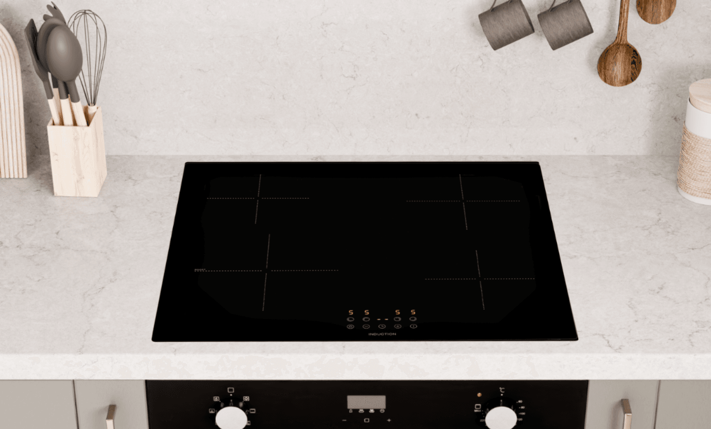

Elektricien Veghel 24 uur ⚡
Wilt u een inductiekookplaat laten aansluiten? Bij Elektricien Veghel verzorgen wij alles voor u – van het installeren van een Perilex-aansluiting tot het aanleggen van een aparte kookgroep in uw meterkast.

Bent u op zoek naar een energiezuinige en veilige kookmethode als alternatief voor koken op gas of een traditionele elektrische kookplaat? Dan is een inductiekookplaat de perfecte keuze! Bij inductiekoken wordt de warmte direct in de pan opgewekt, waardoor geen energie verloren gaat aan de omgeving.
Dit biedt meerdere voordelen: het kookproces is efficiënter, omdat de warmte direct wordt overgedragen aan de pan, en het is bovendien veiliger, aangezien er geen open vuur is en de kookplaat zelf nauwelijks heet wordt.
De ervaren elektriciens van Elektricien Veghel 24 uur staan klaar om uw inductiekookplaat professioneel aan te sluiten – inclusief het aanleggen van een aparte kookgroep, het installeren van een Perilex-stekker en stopcontact, en de aansluiting in de meterkast. Zo bent u verzekerd van een veilige installatie die volledig voldoet aan de geldende normen. Inductiekoken was nog nooit zo eenvoudig!

.png)
Wanneer u een nieuwe inductiekookplaat aanschaft, is het belangrijk dat deze vakkundig wordt aangesloten – en daar helpt Elektricien Veghel 24 uur u graag bij. Onze ervaren elektriciens hebben uitgebreide kennis van inductiesystemen en zorgen voor een veilige installatie volgens de hoogste kwaliteitsnormen.
Of u nu uw oude kookplaat wilt vervangen of een nieuwe aansluiting in de meterkast nodig heeft met een Perilex-stopcontact voor moderne kookzones, wij staan 24/7 voor u klaar. Het aansluiten van een inductiekookplaat vereist specialistische kennis en precisie, en bij Elektricien Veghel 24 uur bent u verzekerd van een betrouwbare en veilige aansluiting.
Wilt u overstappen op inductie koken? De elektriciens van Elektricien Veghel 24 uur nemen het complete werk voor u uit handen en zorgen voor een veilige en efficiënte installatie van uw kookplaat, inclusief Perilex-stekker en -stopcontact.
Wij verzorgen de juiste bedrading, sluiten de kookplaat zorgvuldig aan op de stroomvoorziening en voeren een grondige test uit om te controleren of alles perfect functioneert. Door te vertrouwen op onze expertise voorkomt u problemen en onnodige risico’s bij het aansluiten van uw inductiekookplaat. Laat onze erkende installateurs u helpen aan een betrouwbare en naadloze installatie voor een optimale kookervaring.
Voor het aansluiten van elektrische kookplaten, zoals een inductie- of keramische kookplaat, is het vaak nodig om een extra groep in de meterkast te laten plaatsen. Dit is gebruikelijk bij de meeste inductie-installaties. Een erkende elektricien zorgt ervoor dat de kookgroep correct wordt aangesloten op de gekoppelde groepen, zodat uw kookplaat veilig en optimaal functioneert.
Een inductiekookplaat verbruikt meer stroom dan een traditionele kookplaat, waardoor uw elektrische installatie hierop aangepast moet zijn. De elektriciens van Elektricien Veghel 24 uur zijn gespecialiseerd in het aanleggen van extra kookgroepen.
Zij inspecteren eerst uw huidige installatie om te bepalen of een extra groep nodig is. Indien dat het geval is, leggen ze nieuwe bedrading aan en plaatsen de juiste beveiligingsschakelaars. Zo bent u verzekerd van een veilige en betrouwbare aansluiting, en kunt u uw inductiekookplaat gebruiken zonder risico op overbelasting van het stroomnet.
Voor een inductiekookplaat kunt u geen gewone stekker in een standaard stopcontact gebruiken. Hiervoor is een speciaal Perilex-stopcontact nodig. Onze ervaren elektriciens, die hierin zijn gespecialiseerd, zorgen voor een veilige en correcte installatie.
Neem gerust telefonisch contact met ons op om uw situatie te bespreken – zo kunnen wij u snel en op de best mogelijke manier helpen.
Bij het aansluiten van een inductiekookplaat is het belangrijk om de juiste elektrische aansluiting te kiezen. Het verschil tussen een standaard stopcontact en een Perilex-stopcontact zit in de hoeveelheid stroom die ze kunnen leveren.
Een standaard stopcontact kan tot 230 volt aan, terwijl een Perilex-aansluiting geschikt is voor een spanning tot 460 volt. Dit betekent dat een Perilex-stopcontact tweemaal zoveel vermogen kan leveren, wat ideaal is voor krachtige apparaten zoals inductiekookplaten.
Daarom is het belangrijk om te bekijken hoeveel stroom uw kookplaat verbruikt, zodat u kunt bepalen welke aansluiting het meest geschikt is voor uw situatie.
Bij het gebruik van een Perilex-aansluiting is ook een Perilex-stekker nodig, aangezien een gewone stekker hier niet op past. Een Perilex-stopcontact heeft vier aansluitpunten, terwijl een standaard stopcontact er slechts twee heeft.
Het is daarom belangrijk om de juiste aansluiting te kiezen, afhankelijk van het vermogen van uw inductiekookplaat. Een gewoon stopcontact kan dit hoge vermogen niet aan en is dus ongeschikt. Laat de Perilex-aansluiting en -stekker daarom altijd vakkundig installeren door een erkende elektricien, zodat alles veilig en volgens de voorschriften wordt aangesloten.
Bij Elektricien Veghel 24 uur weten we hoe belangrijk een veilige en correcte aansluiting van uw inductiekookplaat is. Onze ervaren elektriciens staan voor u klaar, of het nu gaat om een 2-fase of 3-fase aansluiting met Perilex. Neem gerust contact met ons op voor professionele hulp, zodat u snel en zonder zorgen kunt genieten van uw nieuwe kookplaat – veilig en perfect aangesloten.

Het aansluiten van een inductiekookplaat op de meterkast vereist zorgvuldige stappen om een veilige en efficiënte werking te garanderen. Allereerst moet er in de meterkast voldoende stroomcapaciteit aanwezig zijn, aangezien een inductiekookplaat meer vermogen vraagt dan een traditionele kookplaat.
Vaak is het nodig om een aparte kookgroep te installeren met de juiste stroomsterkte en bekabeling. Daarnaast moet de aardlekschakelaar worden gecontroleerd en indien nodig aangepast, zodat deze de extra belasting aankan.
Om fouten of gevaarlijke situaties te voorkomen, is het sterk aan te raden dit werk over te laten aan een erkende elektricien. De specialisten van Elektricien Veghel 24 uur zorgen ervoor dat uw kookplaat correct en volgens de veiligheidsnormen wordt aangesloten.
Onze ervaren elektriciens beschikken over uitgebreide kennis van meterkastaansluitingen en zorgen ervoor dat uw inductiekookplaat veilig en volgens de geldende voorschriften wordt aangesloten. Zij installeren de juiste bekabeling en beveiligingscomponenten, zodat uw kookplaat optimaal en zonder risico’s kan functioneren.
Daarnaast letten onze specialisten op een goede verdeling van de elektrische belasting, zodat overbelasting of storingen worden voorkomen. Met de professionele installatieservice van Elektricien Veghel 24 uur geniet u zorgeloos van de voordelen van inductiekoken, in de zekerheid dat alles veilig, betrouwbaar en correct is aangesloten.
Neem vandaag nog contact met ons op om een afspraak te maken voor het aansluiten van uw inductiekookplaat. Onze vriendelijke medewerkers staan voor u klaar om uw vragen te beantwoorden en u te voorzien van alle benodigde informatie over onze diensten.
Kies voor de professionele service van Elektricien Veghel 24 uur en laat uw inductiekookplaat veilig en vakkundig installeren door onze ervaren elektriciens!
Staat uw vraag er niet tussen? Geen zorgen – onze medewerkers van Elektricien Veghel 24 uur staan dag en nacht voor u klaar!
Vraagt u zich af hoe de aansluiting van een inductiekookplaat werkt, hoe we deze op de meterkast aansluiten of waar we rekening mee houden bij de installatie? Wij hebben het antwoord!
Het inbouwen van inductiekookplaten en het aanleggen van inductiestroom doen wij dagelijks. Zo bent u verzekerd van een professionele, veilige en vakkundige installatie.
Bel 085 212 9861Ja, in de meeste gevallen heeft een inductiekookplaat een Perilex-aansluiting en een aparte kookgroep nodig. Dit zorgt ervoor dat de kookplaat voldoende vermogen krijgt en veilig kan worden gebruikt zonder overbelasting van de elektrische installatie.
Neem contact op met onze elektricien.